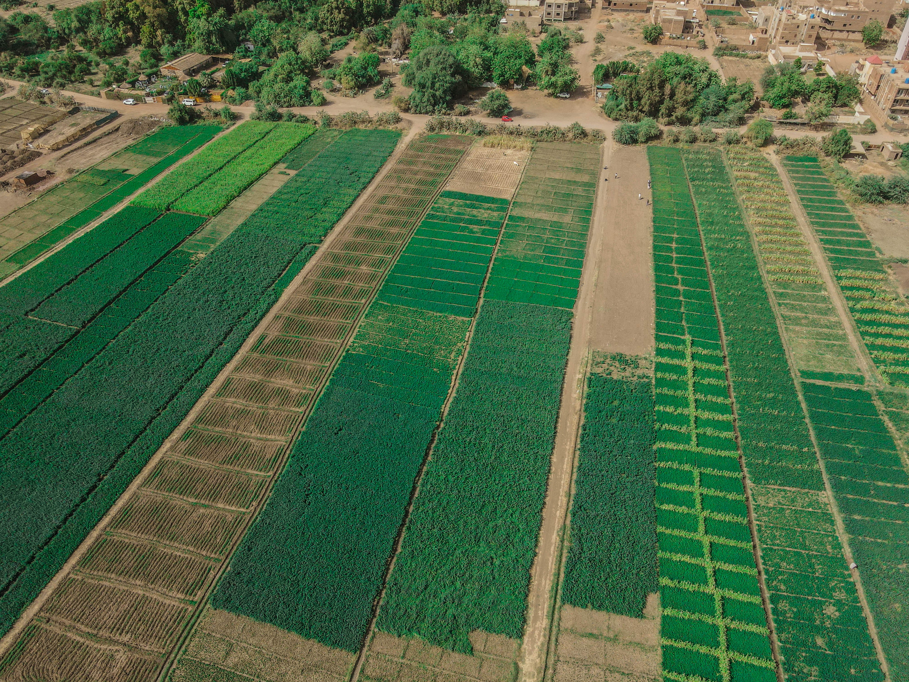
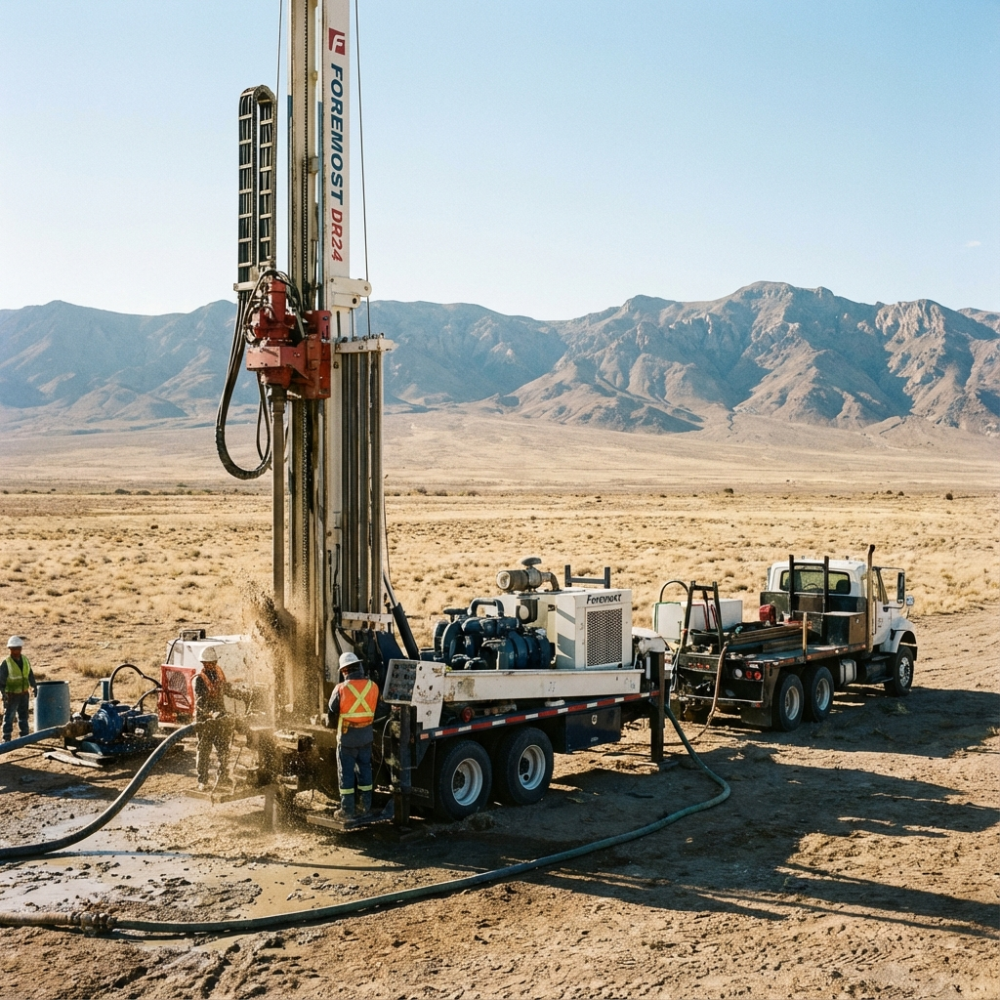
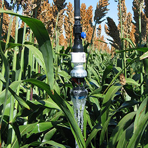
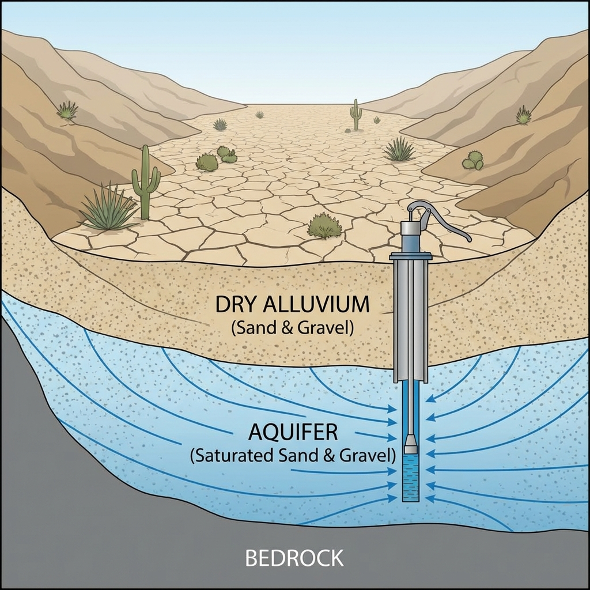
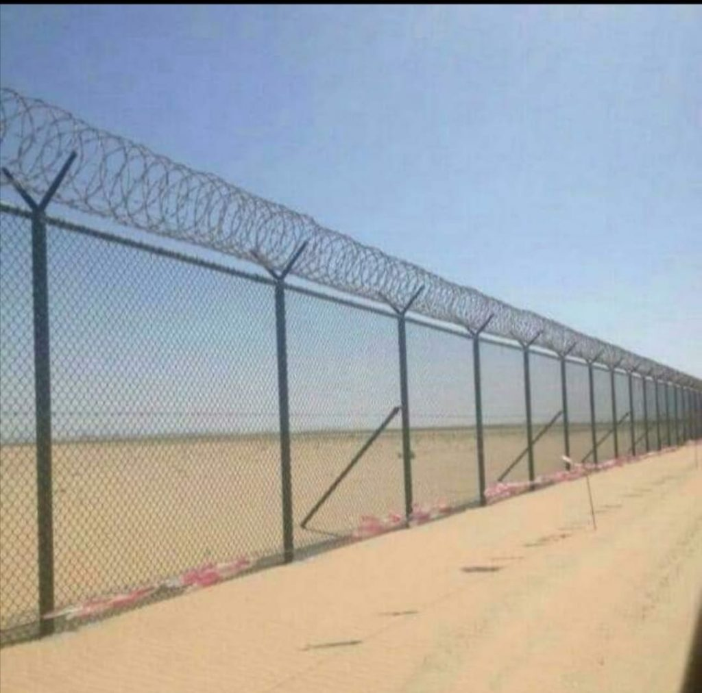
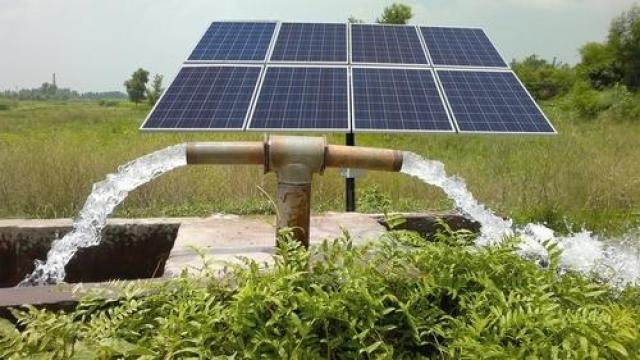

تكتسب قطعة المحمودية ثقلاً استراتيجياً بالنظر إلى تموضعها الجيولوجي الفريد فوق نطاق التماس مع الدرع العربي (Arabian Shield)؛ حيث تشير القراءات الهيدرولوجية المعمقة لوادي ناوان إلى أن الموقع يمثل حوضاً ترسيبياً واعداً يتسم بنفاذية عالية. وباعتبارها تقع ضمن الامتداد الصخري والرسوبي القادر على حجز وتوجيه المياه الجوفية من مناطق التغذية العلوية (Recharge Zones) نحو العمق، فإن احتمالية اعتراض مكامن مياه ارتوازية ضخمة تزداد بشكل ملحوظ. إن هذا النمط من الانتقال الهيدروليكي تحت السطحي، المدعوم بطبقات القاعدة الصخرية للدرع العربي، يجعل من حفر بئر ارتوازية في المحمودية خياراً علمياً ذا موثوقية عالية، ليس فقط لاستغلال المياه الجارية، بل للوصول إلى المخزون الاستراتيجي المتجمع في التشققات الصخرية والطبقات الحاملة للمياه.
المياه الجوفية تتحرك دائماً من المناطق المرتفعة رطوبياً (مناطق التغذية) نحو المناطق الأقل ارتفاعاً داخل الوادي. وبما أن المحمودية تقع في جزء منخفض نسبياً من الامتداد الطبيعي للوادي، فإن هذا يجعلها نقطة تجمع طبيعي لتدفق المياه الجوفية.
طبقات الوادي مكوّنة من خليط رملي–حصوي عالي النفاذية. هذا النوع من الرواسب يسمح للمياه بالتحرك أفقياً تحت السطح لمسافات كبيرة، حتى في الأماكن التي لا يصلها السيل على السطح. المياه هنا "تتسرب" من أعلى الوادي، ثم تتحرك أفقياً ببطء نحو الأسفل... والمحمودية تقع ضمن هذا المسار.
في معظم الأودية الرسوبية، يكون الخزان الجوفي مستمرًا تحت سطح الوادي، وليس مجزأً. هذا يعني أن أي نقطة داخل الامتداد الرسوبي — مثل المحمودية — يمكن أن تستفيد من التغذية التي تحدث أعلى الوادي، حتى إن لم يمر السيل فوقها مباشرة.
| الميزة | الشرح |
|---|---|
| موقعها داخل الامتداد الطبيعي للمجرى الرسوبي | المحمودية ليست على طرف الوادي؛ بل داخل امتداده، وهذا مهم جداً. الموقع الوسطي يجعلها من مناطق التجميع الجوفي (Groundwater Collection Zone). |
| تربة نفاذة قادرة على استلام المياه الجوفية المارة تحتها | التركيب المرصود في المحيط: رمال + حصى + كونغلوميرات، وهو نفس التكوين الذي يسمح للمياه الجوفية بالتحرك تحت سطح الأرض بسهولة. |
| محاذاة هيدرولوجية مع الآبار المنتجة القريبة | الآبار المجاورة في نفس خط الامتداد الرسوبي غالباً ما تشترك في نفس الطبقة الجوفية. النجاح في الآبار القريبة يعني أن المحمودية تقع على نفس المسار الجوفي — وهذا مؤشر قوي جداً. |
استناداً إلى الانحدار الطبيعي للوادي، الامتداد الرسوبي المستمر، تحرك المياه الجوفية أفقياً نحو المناطق المنخفضة، الآبار المنتجة القريبة، ونوعية التربة في المحيط، فإن احتمالية نجاح حفر بئر ارتوازية في قطعة المحمودية تعتبر مرتفعة علمياً وميدانيًا.
تفرض طبيعة الأرض ومساحة منطقة "المحمودية" أسلوباً خاصاً في الري؛ فهي لا تناسب الري المحوري الذي يهدر الأطراف، بل تحتاج إلى كفاءة نظام الرشاش الخطي الطولي.
هذا النظام يتحرك في خط مستقيم ليغطي كامل المساحة الزراعية، معتمداً على أنبوب مرن للإمداد ينسحب خلفه بانسيابية. إنه حل تقني يتميز بالبساطة والجدوى الاقتصادية العالية، مما ينهي صعوبات أنظمة الري التقليدية.
الشبك الزراعي ليس كماليات، بل ضرورة لحماية المحصول وصيانة الجهد والمال؛ فهو خط الدفاع الأول أمام اللصوص الذين يتربصون، والمتطفلين الذين لا يفرقون بين الفضول والاعتداء، والحساد الذين يضيق صدرهم برؤية النعمة عند غيرهم، وضعاف العقول الذين لا يعرفون حرمات أموال الناس ولا يقيمون لها وزنًا.
كما يقوم بدور حاسم في منع الحيوانات السائبة من إتلاف الزراعة والاعتداء على الأعلاف قبل حصادها. باختصار، الشبك الزراعي يحفظ الحق، ويقلل الخسائر، ويضمن أن يصل المحصول إلى موعده سالمًا، دون أن يُستنزف قبل أوانه، لذلك ضروري جداً ان تبني شبكاً محكماً يحمي أملاكك لأن الله وهبك نعمة عظيمة وجعلك أميرها ولست بأقل من غيرك من اصحاب الأملاك.
يغطي هذا الجدول دورة زراعية مكثفة لمدة 530 يوماً (سنة و7 أشهر تقريباً)، بما في ذلك فترات النمو والتحضير والتوقف. يتم خلال هذه الفترة إنتاج الذرة الرفيعة العلفية عبر 8 حشات خلال موسمين.
| رقم العملية | المرحلة | النشاط | المدة (يوم) | اليوم التراكمي |
|---|---|---|---|---|
| 1 | الموسم الأول (البداية) | تحضير التربة والزراعة | 10 | 10 |
| 2 | - | فترة النمو الأولى (حتى الحشة الأولى) | 55 | 65 |
| 3 | الحشة الأولى | الحشة الأولى + تعبئة بالات | 5 | 70 |
| 4 | - | فترة النمو الثانية (حتى الحشة الثانية) | 55 | 125 |
| 5 | الحشة الثانية | الحشة الثانية + تعبئة بالات | 5 | 130 |
| 6 | - | فترة النمو الثالثة (حتى الحشة الثالثة) | 55 | 185 |
| 7 | الحشة الثالثة | الحشة الثالثة + تعبئة بالات | 5 | 190 |
| 8 | - | فترة النمو الرابعة (حتى الحشة الرابعة) | 55 | 245 |
| 9 | الحشة الرابعة | الحشة الرابعة + تعبئة بالات | 5 | 250 |
| 10 | فترة التوقف والإراحة | إزالة بقايا الجذور + تهيئة التربية | 30 | 280 |
| 11 | الموسم الثاني (البداية) | تحضير التربة والزراعة | 10 | 290 |
| 12 | - | فترة النمو الأولى (حتى الحشة الأولى) | 55 | 345 |
| 13 | الحشة الخامسة | الحشة الأولى للموسم الثاني + تعبئة بالات | 5 | 350 |
| 14 | - | فترة النمو الثانية (حتى الحشة الثانية) | 55 | 405 |
| 15 | الحشة السادسة | الحشة الثانية للموسم الثاني + تعبئة بالات | 5 | 410 |
| 16 | - | فترة النمو الثالثة (حتى الحشة الثالثة) | 55 | 465 |
| 17 | الحشة السابعة | الحشة الثالثة للموسم الثاني + تعبئة بالات | 5 | 470 |
| 18 | - | فترة النمو الرابعة (حتى الحشة الرابعة) | 55 | 525 |
| 19 | الحشة الثامنة | الحشة الرابعة للموسم الثاني + تعبئة بالات | 5 | 530 |
خلال موسمين
وزن أخضر
خلال سنة و7 أشهر
| البند | الموسم الأول | الموسم الثاني | الإجمالي للموسمين |
|---|---|---|---|
| عدد الحشات | 4 حشات | 4 حشات | 8 حشات |
| إنتاج الحشة الواحدة | 50 طناً | 50 طناً | - |
| الإنتاج الموسمي الإجمالي | 200 طن | 200 طن | 400 طن |
| وزن البالة المعبأة | 20 كجم | 20 كجم | 20 كجم |
| عدد البالات الإجمالي/الموسم | 10,000 بالة | 10,000 بالة | 20,000 بالة |
| سعر البالة الواحدة (التقديري) | 15 ريالاً | 15 ريالاً | 15 ريالاً |
| الإيراد الإجمالي/الموسم | 150,000 ريال | 150,000 ريال | 300,000 ريال |
هذا المشروع لا يعتمد على نشاط واحد، بل على 3 مصادر دخل مترابطة تضمن الاستدامة والنمو المالي:
الفكرة ليست التوسع العشوائي، بل تعظيم الاستفادة القصوى من كل قطرة مياه وكل شبر أرض موجود بالفعل.
| البند | القيمة |
|---|---|
| المساحة | 2 هكتار (زراعة أطراف) |
| عدد النخيل | 112 نخلة |
| الصنف | مجدول |
| سعر البيع (جملة محافظ) | 5 ريال / كجم |
| إنتاج النخلة | إجمالي الإنتاج (طن) | الإيراد السنوي (ريال) - بيع خام |
|---|---|---|
| 120 كجم | 13.44 طن | 67,200 ريال |
| 150 كجم (متوسط) | 16.80 طن | 84,000 ريال |
| 220 كجم | 24.64 طن | 123,200 ريال |
ليس مصنعًا ضخماً ولا خطاً صناعيًا معقداً، بل وحدة معالجة احترافية مصممة خصيصًا لخدمة الـ 112 نخلة بكفاءة عالية.
| العنصر | التكلفة التقريبية (ريال) |
|---|---|
| طاولات عمل ستانلس | 1,000 ريال |
| ميزان رقمي حساس | 200 ريال |
| ماكينة لحام وإغلاق | 500 ريال |
| مواد تعبئة وتغليف | 1,300 ريال |
| الإجمالي | ≈ 3,000 ريال |
ريال / سنوياً
ريال / سنوياً (9 ريال/كجم)
زيادة الإيراد: +67,200 ريال سنويًا
ملاحظة: هذه الزيادة مقابل استثمار بسيط قدره 3,000 ريال فقط!
البئر موجود أساساً للري، واستغلال الفائض هو استثمار ذكي لمورد متاح بالفعل.
| البند | القيمة التشغيلية |
|---|---|
| كمية البيع اليومية | 20 طن |
| عدد الجالونات (20 لتر) | 1,000 جالون |
| سعر الجالون | 2 ريال |
ريال
ريال (كهرباء + عمالة + صيانة)
ريال تقريباً
يمثل "المحرك النقدي" اليومي، حيث يمول الأسمدة، صيانة شبكة الري، ويغطي أي أعطال طارئة دون المساس بالمدخرات.
يمثل "الأصل الاستراتيجي"، إنتاج موسمي مرتفع القيمة يضمن عوائد كبرى عند الحصاد.
يمثل "مضاعف الربح"، يرفع قيمة المنتج النهائي من زراعة تقليدية إلى منتج استهلاكي فاخر.
"مزرعة تموّل نفسها بنفسها، وتنتج عوائد ثابتة ومتنامية."
وكيف ينبغي ان يكون وماهي التجهيزات الضرورية للمشروع.






بناءً على التحليل الهيدروجيولوجي والدراسة الزراعية، فإن مشروع قطعة المحمودية يظهر إمكانات عالية للنجاح على المستويين:
موقع المحمودية داخل الامتداد الرسوبي الطبيعي للوادي، ووجود خزان جوفي ممتد، والتكوين الأرضي النفاذ (رمال + حصى) جميعها عوامل تدعم احتمالية عالية لنجاح حفر البئر.
ضرورة إجراء مسح جيوفيزيائي قبل الحفر لتحديد نقطة الحفر الدقيقة والعمق المتوقع، مما يزيد من فرص النجاح ويقلل المخاطر.
يمكن تحقيق إيرادات تصل إلى 300,000 ريال خلال سنة و7 أشهر عبر دورة مكثفة للذرة الرفيعة العلفية (8 حشات، 400 طن إنتاج).
توفر المياه الجوفية مصدر ري مستدام يدعم الجدوى الاقتصادية للمشروع الزراعي. نجاح البئر يعني تأمين مصدر مائي دائم للري، مما يضمن استمرارية الإنتاج الزراعي.
مشروع قطعة المحمودية يمثل فرصة استثمارية متكاملة، حيث تدعم الدراسة الهيدروجيولوجية احتمالية عالية لنجاح حفر البئر، بينما تظهر الدراسة الزراعية إمكانية تحقيق عوائد اقتصادية مجدية. نجاح المشروع يعتمد على التنفيذ المنهجي بدءاً بالمسح الجيوفيزيائي، ثم الحفر، ثم تنفيذ الخطة الزراعية.
حفر البئر هنا خطوة منطقية ومدعومة علمياً... وفرصة كبيرة للحصول على مصدر مائي دائم ودعم الإنتاج الزراعي المجدي اقتصادياً.